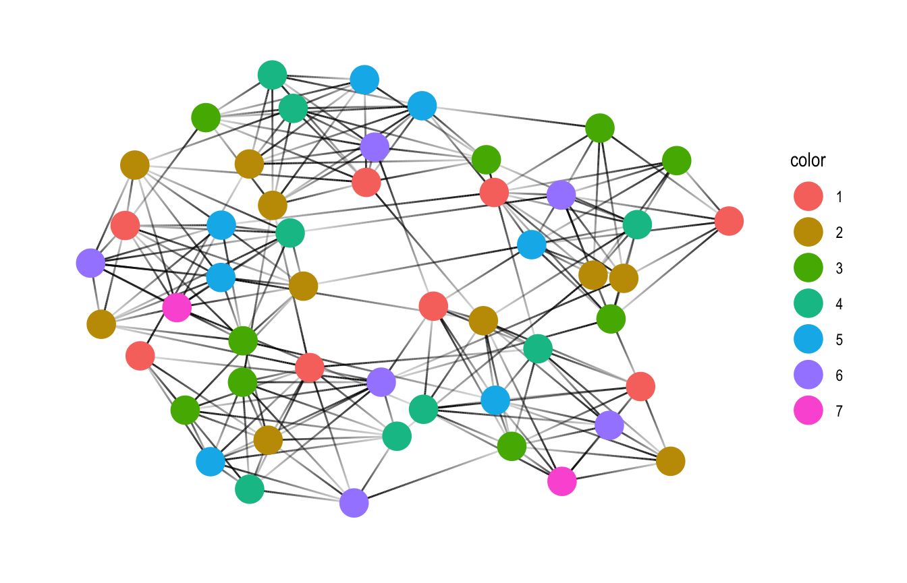
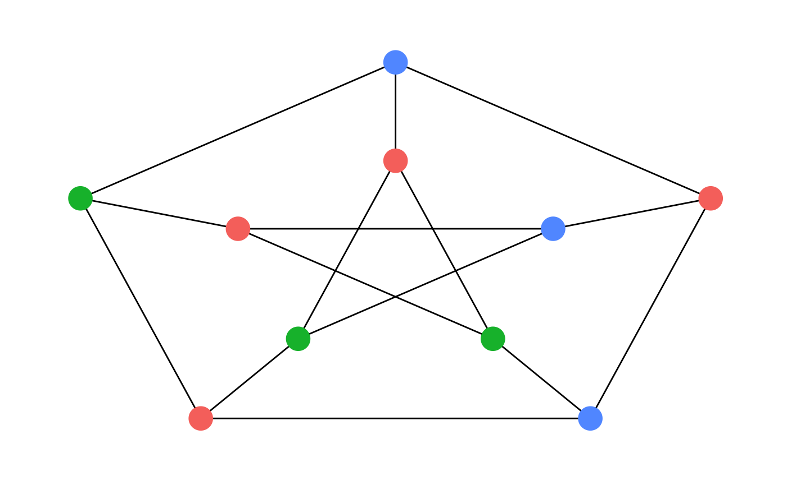
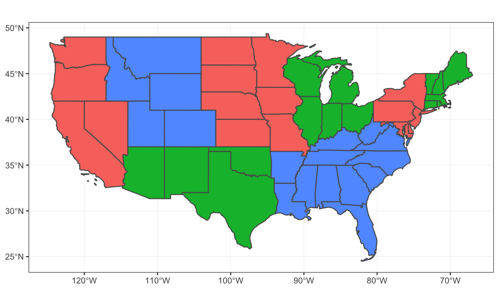
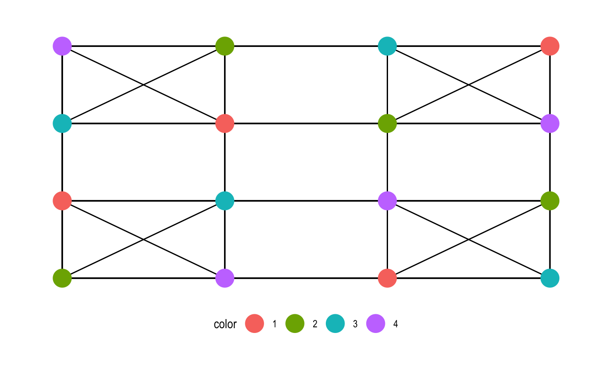
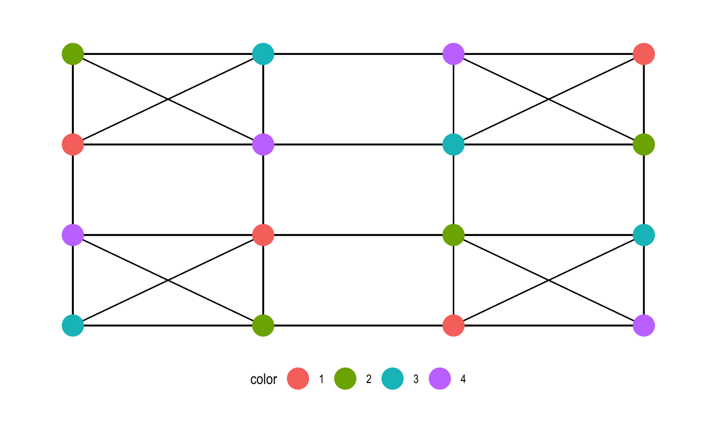

graphcoloring is a collection of graph coloring algorithms for coloring vertices of a graph such that no two adjacent vertices share the same color. The algorithms are included via the embedded ‘GraphColoring’ C++ library, https://github.com/brrcrites/GraphColoring. The package provide two sets of functions, color_* and graph_coloring_*, which operate on a tidygraph and adjavency lists respectively. Both sets of functions covers all algorithms found in the C++ GraphColoring library.
Algorithms
Here is the list of algorithms found in graphcoloring package:
- graph_coloring_dsatur
- graph_coloring_hybrid_dsatur_tabucol
- graph_coloring_hybrid_lmxrlf_tabucol
- graph_coloring_lmxrlf
- graph_coloring_msc
- graph_coloring_tabucol
Coloring a tidygraph
tidygraph is a powerful abstraction for graph datasets. It envisions a graph as two tidy tables, nodes and edges, and provides ways to activate either set and apply dplyr verbs for manipulation.
color_* functions operate under tidygraph family and can be used to color nodes within mutate context similar to group_* functions in tidygraph. They automatically use the graph that is being computed on, and otherwise passes on its arguments to the relevant coloring function. The return value is always a integer vector of assigned color index so that neighboring nodes never share the same color.
library(graphcoloring)
library(tidygraph)
library(ggraph)
set.seed(42)
play_islands(5, 10, 0.8, 3) %>%
mutate(color = as.factor(color_dsatur())) %>%
ggraph(., layout = 'kk') +
geom_edge_link(aes(alpha = ..index..), show.legend = FALSE) +
geom_node_point(aes(color = color), size = 7) +
theme_graph()
Working with Adjacency List
graph_coloring_* functions directly take adjacency lists and returns an integer vector of assigned labels.
Here is a 3-coloring of the famous Petersen Graph:
library(graphcoloring)
library(igraph)
library(dplyr)
# create graph
petersen_graph <- graph.famous("Petersen")
# get adjacency list
petersen_edges <- as_adj_list(petersen_graph)
# color the graph with 3 colors
set.seed(10737312)
petersen_colors <- graph_coloring_tabucol(petersen_edges, 3)
# arrange vertices for layout
petersen_positions <- data_frame(
theta = (0:4) * 2 * pi / 5 + pi / 2,
r = 2
) %>%
bind_rows(
mutate(., r = r / 2)
) %>%
transmute(
x = r * cos(theta),
y = r * sin(theta)
)
petersen_graph %>%
as_tbl_graph() %>%
mutate(color = as.factor(petersen_colors)) %>%
ggraph(., layout = "manual", node.positions = petersen_positions) +
geom_edge_link() +
geom_node_point(aes(color = color), size = 7, show.legend = FALSE) +
theme_graph()
One common use case for graph coloring is to visualize geographical dataset to color contiguous groupings. For example, this can be used with sf::st_intersects() to color a feature collection for visualization.
Here we look at Bureau of Economic Analysis regions which group US states into 8 regions:
{kind=link}
library(graphcoloring)
library(USAboundaries)
library(sf)
library(ggplot2)
library(rvest)
# retrieve Bureau of Economic Analysis regions
bea_regions <- read_html("https://apps.bea.gov/regional/docs/regions.cfm") %>%
html_node(".table") %>%
html_table()
# 48 states
states_sf <- us_states() %>%
filter(!(name %in% c("Alaska", "District of Columbia", "Hawaii", "Puerto Rico"))) %>%
left_join(bea_regions, c("state_name" = "State or Region name"))
# color regions
set.seed(48)
region_colors <- states_sf %>%
group_by(`Region code`) %>%
summarise() %>% {
colors <- st_intersects(.) %>%
graph_coloring_dsatur() %>%
as.factor()
data_frame(
`Region code` = .$`Region code`,
color = colors
)
}
states_sf %>%
left_join(region_colors, "Region code") %>%
ggplot() +
geom_sf(aes(fill = color), show.legend = FALSE) +
theme_bw()
It might be better to choose an 8-color palette in this case but graph coloring can be particularly useful when the number of colors get exceedingly big.
Other Applications
Graph coloring is commonly used in Scheduling and Register Allocation. It can also be used to solve Sudoku puzzles!
A Sudoku puzzle plays on a 9x9 grid where some entries are pre-filled with numbers from 1 to 9. The goal is the fill the entire grid with 1 to 9 such that:
- Numbers in each row is not repeated
- Numbers in each columns is not repeated
- Numbers in each of 3x3 box/block/subgrid is not repeated


A Sudoku puzzle can be converted into a graph by modeling the 9x9 cells into 81 vertices where a pair of vertices are connected if and only if they are on the same row, column, or 3x3 block. Each valid Sudoku solution is therefore a 9-coloring of the Sudoku graph.
generate_sudoku <- function(n, seed) {
set.seed(seed)
sudoku_graph(n) %>%
mutate(color = as.factor(color_tabucol(4))) %>%
ggraph(., layout = "grid") +
geom_edge_link() +
geom_node_point(aes(color = color), size = 7, show.legend = TRUE) +
theme_graph() +
theme(legend.position = "bottom")
}
generate_sudoku(2, 432)
generate_sudoku(2, 45)